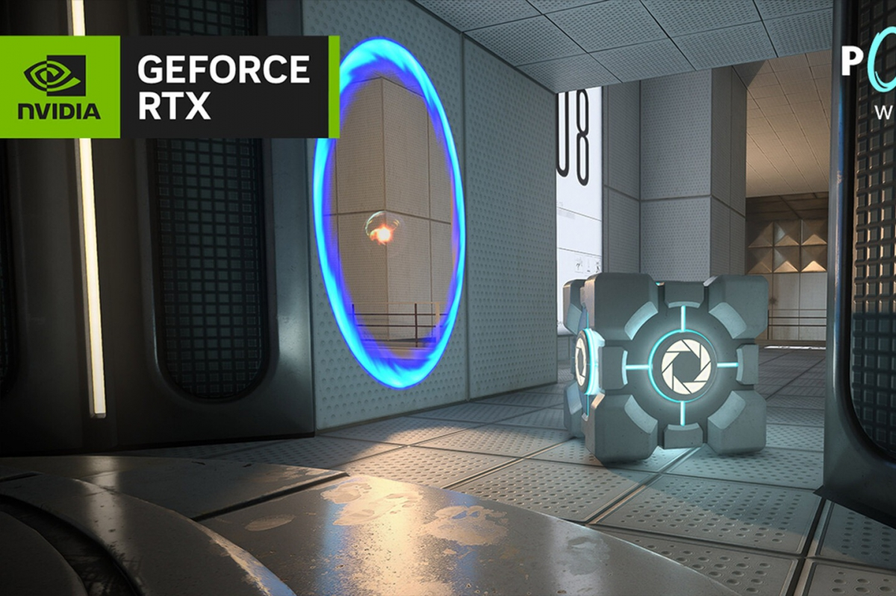
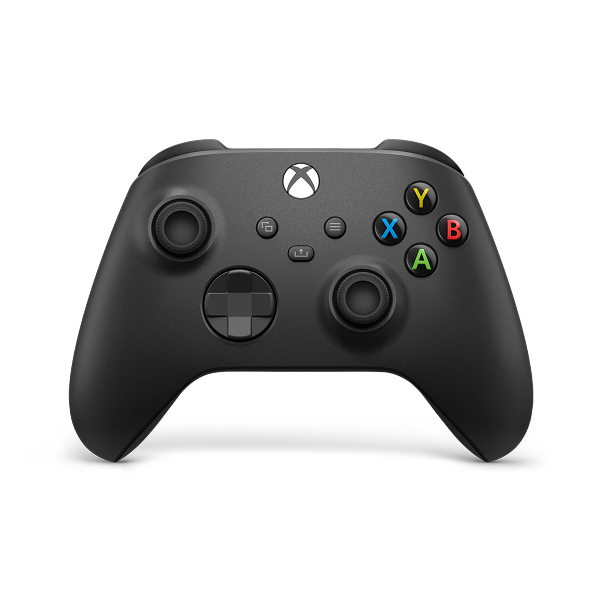
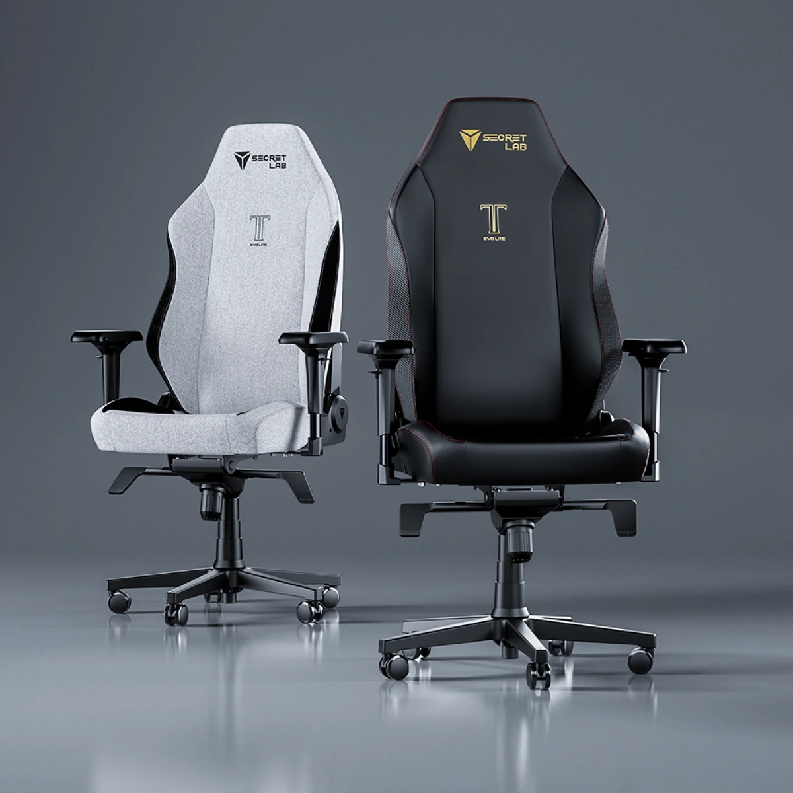

Mantente al día con las últimas noticias y análisis de tus juegos favoritos.

PlayStation anuncia los 8 juegos gratis de septiembre de 2025 para miembros de PS Plus Extra y Premium
Publicado el 10 Septiembre 2025
El Catálogo de PS Plus Extra y Premium se actualiza el 16 de septiembre con una variedad de géneros: lucha libre, estrategia y supervivencia.
Leer Más
¡Madrid y Barcelona dominan! EA SPORTS FC 26 anuncia los mejores jugadores de LALIGA y Liga F, y hay sorpresas
Publicado el 10 Septiembre 2025
La Semana de las Valoraciones de EA SPORTS FC 26 pone el foco en estrellas como Mbappé, Lamine Yamal, Aitana Bonmatí y Alexia Putellas.
Leer Más

NVIDIA RTX Remix recibe un sistema avanzado de partículas con trazado de rayos
Publicado el 09 Septiembre de 2025
NVIDIA ha anunciado una nueva actualización de RTX Remix, su plataforma de modding para PC con GPU GeForce RTX. La principal novedad es la incorporación de un sistema de partículas con path tracing que permite mejorar efectos clásicos como fuego y humo, además de añadir partículas con físicas realistas y reflejos dinámicos.
Leer Más

Jugadores temen que la próxima consola de Xbox sea demasiado cara por aumentos recientes en el precio de Series X|S
Publicado el 20 de Septiembre de 2025
Microsoft subió el precio de Xbox Series X|S una vez más por culpa de los aranceles y demás factores económicos. De esta forma, el Xbox Series S costará $399 USD y el Xbox Series X de 2TB alcanzará el elevado costo de $799 USD en Estados Unidos. Los jugadores consideran que las cosas se están saliendo de control, pues nunca imaginaron que los sistemas aumentarían tanto de precio en tan poco tiempo.
Leer Más

Hay un nuevo shooter táctico gratis petándolo en Steam con un notable y casi 60.000 jugadores
Publicado el 22 de Septiembre de 2025
Arena Breakout: Infinite. El título de Morefun Studios, que combina acción táctica y mecánicas de extracción, se ha convertido en una de las sorpresas más destacadas de septiembre, atrayendo a decenas de miles de jugadores en muy poco tiempo.
Leer Más

PlayStation 5: Potencia de Nueva Generación
Publicado el 12 de Octubre de 2024
La PS5 no es solo una consola, es un centro de entretenimiento inmersivo. Con su SSD de ultra alta velocidad, los tiempos de carga son cosa del pasado. El control DualSense con su respuesta háptica y gatillos adaptativos te hace sentir cada acción del juego. Una experiencia revolucionaria.
Leer Más

Mando Inalámbrico Xbox: Precisión y Comodidad
Publicado el 8 de Octubre de 2024
Microsoft ha perfeccionado un diseño ya legendario. El mando de Xbox Series X mejora el agarre con superficies texturizadas, una nueva cruceta híbrida para movimientos más precisos y el botón "Compartir" para capturar tus mejores momentos al instante. Es el compañero ideal para cualquier PC o consola Xbox.
Leer Más

HyperX Cloud II: Escucha Cada Detalle
Publicado el 3 de Octubre de 2024
Un clásico por una razón. Los HyperX Cloud II son famosos por su increíble comodidad, permitiendo horas de juego sin fatiga. Su calidad de sonido envolvente 7.1 te da una ventaja competitiva al escuchar cada paso enemigo, y su micrófono desmontable con cancelación de ruido asegura una comunicación cristalina.
Leer Más

Logitech G502 HERO: El Rey de la Precisión
Publicado el 25 de Septiembre de 2024
El G502 HERO es un ícono en el mundo del gaming. Equipado con el sensor HERO 25K para una precisión inigualable, cuenta con 11 botones programables y un sistema de pesas ajustables para que lo adaptes a tu estilo de juego. Su diseño ergonómico lo hace perfecto tanto para jugar como para trabajar.
Leer Más

Secretlab TITAN: El Trono Definitivo del Gamer
Publicado el 18 de Septiembre de 2024
La Secretlab TITAN Evo es la inversión definitiva en comodidad y ergonomía. Con materiales de primera calidad, un soporte lumbar ajustable integrado y reposabrazos 4D, esta silla está diseñada para soportar largas sesiones de juego o trabajo. Si te tomas en serio tu setup, esta es tu silla.
Leer Más